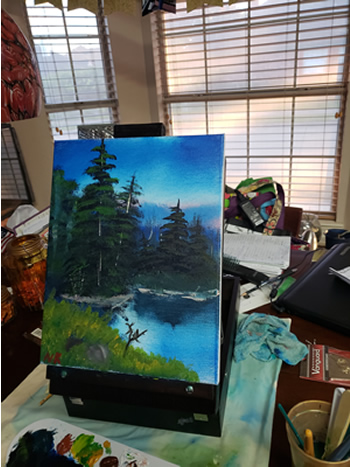

Painting
Some people might know this, but on occasion, I paint. I do my best to paint every weekend, but sometimes life gets in the way and won't let me paint. I really enjoy painting, and as you may have surmised from my link to Bob Ross' website, I would like to make it a career. Below are some of my paintings;
